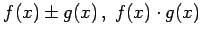
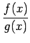
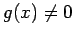

Inhalt Index DeskTop Bronstein

 Funktionen und ihre Darstellung Funktionsbegriff Stetigkeit einer Funktion Eigenschaften stetiger Funktionen
Funktionen und ihre Darstellung Funktionsbegriff Stetigkeit einer Funktion Eigenschaften stetiger Funktionen


Sind f(x) und g(x) auf einem Intervall [a,b] stetig, dann sind dort auch , und  stetige Funktionen, wobei im Falle des Quotienten noch  vorausgesetzt werden muß.